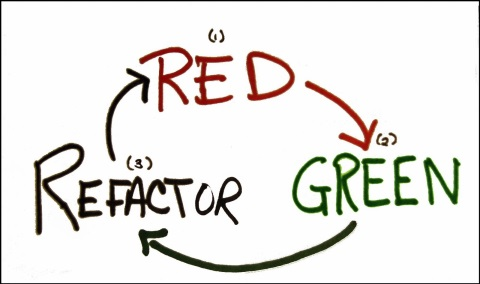

TDD – Разработка через тестирование
Разработка через тестирование (Test-Driven development, TDD) - техника разработки программного обеспечения, которая основывается на повторении очень коротких циклов разработки: сначала пишется тест, покрывающий желаемое изменение, затем пишется код, который позволит пройти тест, и под конец проводится рефакторинг нового кода к соответствующим стандартам.
Методология разработки через тестирование, или TDD (Test Driven Development), появилась в нашей отрасли уже более 10 лет. Изначально она применялась на волне экстремального программирования (XP, eXtreme Programming), но с тех пор была принята на вооружение Scrum и практически всеми остальными гибкими (Agile) методологиями. Даже группы, не использующие гибкие методологии, применяют TDD.
Три закона TDD:
- Новый рабочий код пишется только после того, как будет написан модульный тест, который не проходит.
- Вы пишете ровно такой объем кода модульного теста, какой необходим для того, чтобы этот тест не проходил (если код теста не компилируется, считается, что он не проходит).
- Вы пишете ровно такой объем рабочего кода, какой необходим для прохождения модульного теста, который в данный момент не проходит.
Эти три закона заставляют вас использовать рабочий цикл продолжительностью около 30 секунд. Сначала вы пишете маленькую часть модульного теста. За эти считанные секунды вы упоминаете в коде имя класса или функции, которые еще не были написаны; естественно, модульный тест не компилируется. Следовательно, далее вы должны написать рабочий код, с которым тест откомпилируется. Но писать больше кода нельзя, поэтому вы переходите к написанию дополнительного кода модульного теста.

"Мантра" TDD: Red => Green => Refactor
